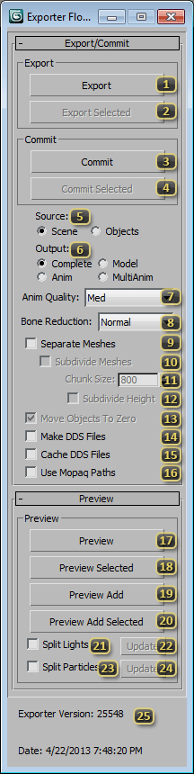

Tool: Export Floater
The Export Prop Floater is the main user interface for describing how to create M3 files. It is divided into Export/Commit, which handles the exporting of final meshes, and 'Preview' which handles settings for looking at your model in the Cutscene Editor.
Export will prompt the user for a path to export game-ready art file(s) for the current scene. These can be either m3 (model) or m3a (animation only) files based on the Output (Export) option. All currently visible objects in the scene that the Star2Exporter plugin knows how to handle will be included. This button considers all options in the Export/Commit rollout as well as Make DDS Files, Cache DDS Files, and Use Mopaq Textures when exporting.
Export Selected behaves like Export except the exporter will consider only objects in the scene which are both visible and currently selected in the main 3ds Max user interface.
Commit is the primary mechanism for creating an m3 and adding it to a mopaq. Commit will export all visible objects in the scene that the Star2Exporter plugin knows how to handle. It will consider only options in the Export/Commit rollup. To get models into game, please see the Commit Tutorial. Commit behaves as if Make DDS Files and Use Mopaq Textures are both checked, and Cache DDS Files is clear.
Commit Selected behaves like Commit except the exporter will consider only objects in the scene which are both visible and currently selected in the main 3ds Max user interface.
Source tells the exporter whether it should consider the whole 3ds Max file as a single m3, or multiple m3s.
- Scene will export the entire scene as a single model file. This is the most basic and standard option. On Export and Commit, the name of the 3ds Max file will be the default name of the resultant m3 file;
Objects is for exporting multiple m3s out of a single 3ds Max file. Sometimes it is more convenient to work on multiple models in a single scene. Any exportable node or group containing multiple nodes can be exported as an individual file. Each exported file is named with the name of the node or group it is exported from.
To prevent unintended files from getting into a mopaq, Committing as Object uses an object validation scheme that would only export nodes or groups with a prefix that matches the name of the 3ds Max file plus certain name suffixes- four letter cliff position + two digits variation number for cliffs (i.e. maxfilename_ACAC_00, maxfilename_ADAD_03); two digits variation number for variations (i.e. maxfilename_01, maxfilename_02); _xtra for a wildcard type (i.e. maxfilename_xtras_scene1, maxfilename_xtras_lights). Any node or group not falling within this naming scheme are ignored.
Output defines what the contents of the exported file(s) should be.
- Complete is the most common type of m3 and holds both 3D Model data as well as Animation data, as defined in the Anim Prop Floater. If no Animations are defined, the currently active Timeline will be exported as Stand.
- Model exports only 3D Model data but not Animation data. This is commonly only used when another file will be exported as Anim and they will be paired together in Data. It is important that both files have identical node names and positions at Frame 0.
- Anim will export only Animation data and enough information about the hierarchy to match it to an m3 at runtime. These files are denoted with the m3a file extension. This setting is commonly used to add extra animations to models. It is important that this file matches the target m3 file in both node names and positions at Frame 0.
- MultiAnim exports each anim as a separate m3a file. The resulting M3A files will be named maxFilename + "_" + animName.m3a.
Anim Quality sets the number of samples used when gathering animation. Lower quality settings take up less memory and yield higher performance. Higher settings are larger and slower. Med is generally acceptable for in-game units. Higher settings are sometimes used for portraits or In-Game Cinematics in StarCraft II. If there is excessive jittering or sliding in animation, particularly long joint chains, changing this setting may help smooth out the animation.
Bone Reduction defines how aggressively the StarCraft II Exporter should try to remove bones when optimizing the model.
- None will prevent bone reduction. This may produce a less optimal model, but makes all bones available at runtime. This is most often used with scenes with Output (Export) set to Model, as this makes sure that all bones are available for animation.
- Med is the default, and the generally suggested option. This will allow the exporter to optimize away any bones that appear to not contribute to the final animation and deformation of the model.
- High gives the exporter the freedom to optimize bones away if it believes that they do not significantly contribute to the animation. Skin-weighting is not accounted for, and this can change the look of the deforming model.
Separate Meshes will keep individual nodes in the scene as separate drawable pieces in the model. This will usually cause in-game units or doodads to draw significantly slower, and should generally be avoided. It can, however, be a minor optimization for very large models that the camera can be inside of, such as StoryMode rooms.
Subdivide Meshes automatically chops the model along the XY grid. This option is used mostly with Terrain Objects. Terrain Objects can be no larger than 800x800 3ds Max Units, or else they will encounter texturing errors.
Chunk Size defines the dimensions of each chunk for Subdivide Meshes. This value is most often at 800, the size of a Terrain Chunk in the StarCraft II Editor.
Subdivide Height causes splits from Subdivide Meshes to occur along the Z axis, and not just the X and Y axes.
Move Objects To Zero (Export) translates each model root, as defined by Source (Export), so that its pivot is at the scene origin before exporting. This allows for working on multiple models in different physical locations in the scene, but for the resulting m3 files to be centered logically. This is used often in StarCraft II for cliff sets and doodads with multiple variations.
Make DDS Files will compress image files assigned to SC2Bitmap textures using BC1 or BC3 compression in the DirectDraw Surface file format. This way, the model will appear the same in the Previewer as it will in-game. This option can be slow, and the block compression algorithm can introduce minor artifacts, so it may not be preferable to use the option at all times. The type of compression is selected automatically by detecting if there is an alpha channel in the source image.
Cache DDS Files will make the exporter only recompress DDS files for which it can detect a change in the source image. This allows Make DDS Files to work faster by skipping unnecessary recompression.
Use Mopaq Textures will cause the exporter to not use local source textures when exporting or previewing. If the textures are not yet available in a loaded mopaq, your model may appear purple. The exported m3 file is nearly identical to one created with Commit. Texture paths will be shortened to mopaq-relative paths, and the extension will be changed to DDS if the exporter believes that the image is compressible. If this option is unchecked, absolute filepaths defined in SC2Bitmap will be used to load textures, and the resultant m3 file may only be usable on the machine on which it was created.
Preview will show the current scene in the Cutscene Editor. If the StarCraft II Editor is already running, it will try to use the existing editor instance; otherwise a new instance of the StarCraft II Editor will be started. All currently visible objects in the scene that the Star2Exporter plugin knows how to handle will be included. This button considers all options in the Preview rollout. Anything in the Loose Files (Previewer) scene in the Cutscene Editor will be entirely replaced.
Preview Selected behaves like Preview except the exporter will consider only objects in the scene which are both visible and currently selected in the main 3ds Max user interface.
Preview Add shows the current scene in the Cutscene Editor much like Preview, but does not remove the current contents of the Loose Files (Previewer) cutscene. If a new scene has not been loaded, the contents of the last Preview operation will be replaced. In this way, it is possible to load several models in the Cutscene Editor, and then repeatedly Preview Add the model you are currently working on to see it in comparison, without having to replace the other models every time.
Preview Add Selected behaves like Preview Add except the exporter will consider only objects in the scene which are both visible and currently selected in the main 3ds Max user interface.
Split Lights will export SC2Omni and SC2Spot light nodes as a separate m3 file and load them as a separate item in the Cutscene Editor. Using this option will enable Update (Split Lights).
Update (Split Lights) will export and update in the Cutscene Editor only the SC2Omni and SC2Spot light types found in the scene. Sometimes, when working on large files, such as StoryMode sets, it can be advantageous to work only on lights, especially when changes are no longer being made to mesh. These export times will generally be drastically faster.
Split Particles will export SC2Particle, SC2Ribbon, SC2SplineRibbon, and SC2Projector nodes as a separate m3 file and load them as a separate item in the Cutscene Editor. Using this option will enable Update (Split Particles).
Update (Split Particles) will export and update in the Cutscene Editor only the SC2Particle, SC2Ribbon, SC2SplineRibbon, and SC2Projector effects types found in the scene. Sometimes, when working on large files, such as StoryMode sets, it can be advantageous to work only on effects, especially when changes are no longer being made to mesh. These export times will generally be drastically faster.
Exporter Version lists the exporter version. This is useful in diagnosing and addressing issues. A newer exporter may not be compatible with older versions of the game. For example, the exporter released with the Heart of the Swarm, will not produce models compatible with replays from the Wings of Liberty 1.5.x patches.